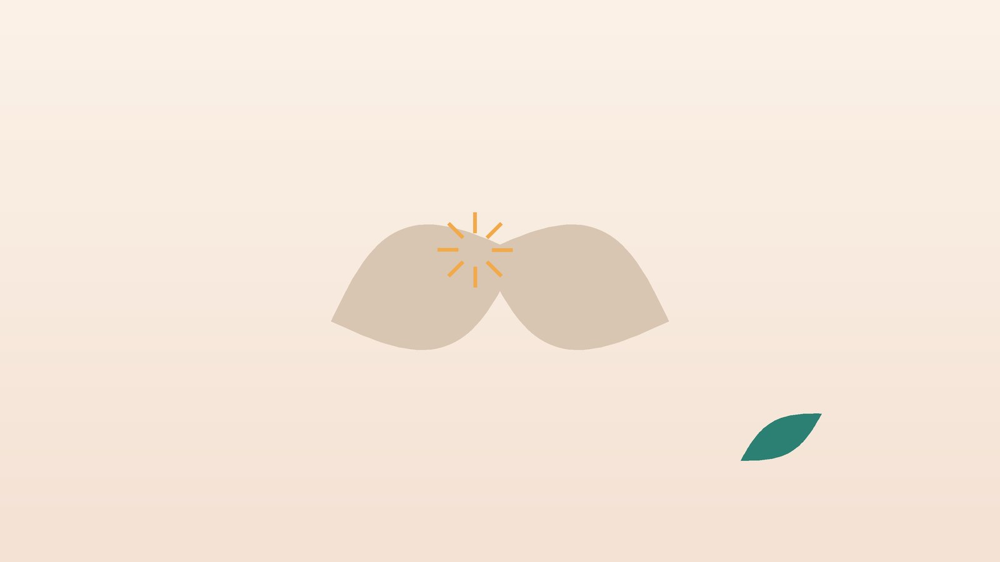

건강 칼럼 · 허리·골반 통증 · 인천 골반통증 한의원
엉덩이 위 골반이 시큰하다면, 천장관절 통증 한방 치료

나의 골반 통증, 이런 모습인가요?
- 엉덩이 위쪽, 바지 허리선 아래 보조개 자리가 한쪽으로 아프다
- 손가락 하나로 아픈 곳을 정확히 짚을 수 있다
- 앉았다 일어서거나 차에서 내릴 때 골반이 찌릿하다
- 계단을 오르거나 한 발로 서서 바지를 입을 때 아프다
- 누워서 돌아누울 때 엉치가 걸리는 느낌이 든다
- 임신 중이거나 출산 뒤부터 골반 통증이 시작됐다
이 체크리스트는 진단 도구가 아니라 상담이 필요한지 가늠해 보는 참고용입니다.
천장관절 통증은 왜 생기고, 허리디스크와 어떻게 다른가요?
천장관절은 몇 밀리미터 정도만 움직이는 작은 관절이지만, 상체의 무게를 다리로 전달하는 길목이라 강한 인대로 묶여 있습니다. 넘어지며 엉덩방아, 짝다리 습관, 다리 길이 차이, 허리 수술로 아래 마디가 고정된 뒤처럼 부담이 한쪽에 몰리면 통증이 생깁니다. 한 가지 진찰로는 확정이 어려워 여러 유발 검사를 함께 봅니다(Cohen 등, 2013).
- 천장관절: 통증이 엉덩이 위쪽과 엉치에 머물고, 허벅지 뒤까지는 내려가도 무릎 아래로는 드뭅니다. 기침에는 크게 변하지 않습니다.
- 허리디스크: 허리에서 엉덩이, 종아리, 발까지 전기처럼 뻗치는 저림이 흔하고, 발의 감각이 둔하거나 발목에 힘이 빠질 수 있습니다. 기침과 재채기에 심해지기도 합니다.
임신 중에는 출산을 준비하며 분비되는 호르몬으로 골반 인대가 느슨해지고, 배가 나오며 무게 중심이 앞으로 쏠려 천장관절과 치골 쪽 통증이 흔합니다.
강직성 척추염이나 다른 질환을 먼저 확인해야 하는 신호
- 40세 이전에 서서히 시작된 허리·엉덩이 통증이 3개월 넘게 이어진다
- 아침에 일어나면 30분 넘게 뻣뻣하고, 움직이면 나아지며 쉬면 오히려 심하다
- 새벽에 허리가 아파 깨고, 좌우 엉덩이가 번갈아 아프다
- 눈이 충혈되고 아픈 포도막염, 발뒤꿈치 통증, 장염·건선이 함께 있다
- 대소변 조절이 어렵거나 회음부 감각이 둔하다 (마미증후군 의심, 응급)
- 열이 나거나, 암 병력이 있거나, 이유 없이 체중이 줄었다
국제척추관절염평가학회(ASAS)는 40세 이전에 시작되고, 서서히 생기며, 운동하면 나아지고 쉬어도 낫지 않으며, 밤에 아픈 허리 통증을 염증성 요통의 특징으로 꼽습니다. 젊은 남성에게 많으며 류마티스내과에서 혈액 검사(HLA-B27 등)와 천장관절 MRI로 확인합니다.
한의학은 엉치와 골반 통증을 어떻게 보나요?
한의학에서는 허리와 엉치가 함께 아픈 것을 요통(腰痛)과 비증(痺證)의 범주에서 다뤘습니다. '허리는 신의 집(腰者腎之府)'이라는 『황제내경』의 말처럼 허리와 골반은 신(腎)의 기운이 받치는 자리로 보아, 과로와 출산, 나이 듦으로 신이 약해지면 골반을 붙잡는 힘이 떨어져 쉽게 시큰거린다고 해석했습니다.
엉치 부위에는 족태양방광경이 지나며 엉치뼈의 구멍마다 상료·차료·중료·하료의 팔료혈(八髎穴)이 있습니다. 엉덩방아나 출산 뒤 혈이 뭉친 어혈, 찬 바닥에 오래 앉거나 습한 환경에서 생긴 한습(寒濕)도 엉치 통증의 흔한 원인으로 보아, 통증이 찌르는지, 무겁고 시린지, 힘없이 시큰한지에 따라 치료를 나눕니다.
나의 골반 통증은 어떤 유형일까?
1. 어혈(瘀血) 부딪치거나 틀어진 유형
- 이런 분에게 많아요
- 엉덩방아를 찧었거나 한쪽 다리로 서는 습관이 있는 분
- 나타나는 모습
- 한 지점이 찌르듯 아프고 특정 동작에서 걸린다
- 함께 오는 몸의 신호
- 골반 높이 차이, 한쪽 다리 당김
- 진찰에서 보이는 모습
- 압통점이 뚜렷하고 혀에 어두운 빛
- 치료 방향
- 뭉친 혈을 풀고 골반 균형을 되찾는 방향 (신통축어탕 계열과 추나)
- 오늘부터 해 볼 것
- 다리 꼬기와 짝다리 짚기를 멈춰 보세요.
2. 산후 기혈허(産後氣血虛) 출산 뒤 느슨해진 유형
- 이런 분에게 많아요
- 출산 후 몇 달 이내인 분, 아기를 안고 지내는 분
- 나타나는 모습
- 골반이 빠질 듯 시큰하고 오래 서 있거나 안으면 심하다
- 함께 오는 몸의 신호
- 피로, 어지럼, 땀이 많음
- 진찰에서 보이는 모습
- 혀가 옅고 맥이 약함
- 치료 방향
- 기혈을 보태 인대와 근육을 받치는 방향 (팔진탕 계열)
- 오늘부터 해 볼 것
- 아기를 안을 때 한쪽 골반에 걸치지 말고 몸 가운데로 안으세요.
3. 한습(寒濕) 차고 무거운 유형
- 이런 분에게 많아요
- 찬 바닥에 앉아 일하거나 몸이 찬 분
- 나타나는 모습
- 엉치가 무겁고 시리며 비 오는 날 심하다
- 함께 오는 몸의 신호
- 아랫배 냉감, 몸이 무거움
- 진찰에서 보이는 모습
- 설태가 희고 끈적하며 맥이 느림
- 치료 방향
- 찬 기운과 습을 걷어 경락을 데우는 방향 (감강령출탕 계열)
- 오늘부터 해 볼 것
- 찬 바닥에 바로 앉지 말고 방석을 까세요.
4. 신허(腎虛) 받치는 힘이 약한 유형
- 이런 분에게 많아요
- 중년 이후, 오래 서서 일하는 분
- 나타나는 모습
- 엉치와 허리가 은근히 시큰하고 쉬면 나아진다
- 함께 오는 몸의 신호
- 무릎 약함, 잦은 소변, 쉽게 지침
- 진찰에서 보이는 모습
- 맥이 깊고 약함
- 치료 방향
- 신을 보해 골반을 받치는 방향 (독활기생탕 계열)
- 오늘부터 해 볼 것
- 엉덩이 근육 강화 운동을 하루 10분 해 보세요.
한의원에서는 어떻게 진찰하나요?
- 통증 지도: 손가락으로 아픈 곳을 짚어 보게 하고, 통증이 무릎 아래로 내려가는지 여쭙습니다.
- 천장관절 유발 검사: 골반을 누르거나 벌리고, 다리를 꺾거나 당기는 여러 검사로 통증이 재현되는지 함께 봅니다.
- 허리·신경 확인: 다리 들어 올리기, 감각, 힘, 반사를 확인해 허리디스크와 구분합니다.
- 골반 정렬: 골반 높이, 다리 길이, 걷는 모습을 살피고 설진·맥진으로 유형을 판단합니다.
침·약침·추나·한약 치료는 어떻게 하나요?
1. 침 치료
- 차료(次髎): 엉치뼈의 두 번째 구멍 자리. 엉치 통증에 대표적으로 씁니다.
- 소장수(小腸俞): 엉치뼈 첫 번째 구멍 높이에서 바깥으로 손가락 두 마디. 천장관절 위쪽에 가깝습니다.
- 질변(秩邊): 엉치뼈 네 번째 구멍 높이에서 바깥으로 손가락 네 마디쯤, 엉덩이 근육 위.
- 위중(委中): 무릎 뒤 오금 가운데. 허리와 엉치의 경락을 풉니다.
- 곤륜(崑崙): 발 바깥쪽 복사뼈 꼭짓점 높이에서 뒤꿈치 힘줄 쪽으로 움푹 들어간 자리.
임신 중이라면 엉치와 허리의 혈, 합곡, 삼음교처럼 임신 중 피하는 자리는 쓰지 않습니다. 진료 때 꼭 알려 주세요.
2. 약침·초음파 가이드 약침과 추나 요법
약침은 일반 약침과 초음파 가이드 약침을 모두 시행하며, 아픈 부위의 깊이와 주변 구조에 따라 진찰 후 골라 씁니다. 초음파 가이드 약침은 초음파 화면으로 바늘 끝을 확인하면서 놓는 방식입니다. 천장관절 주변 인대의 위치를 초음파로 확인하고 바늘 깊이를 맞춰 약침을 놓습니다. 천장관절 주변 인대와 엉덩이 근육의 압통 자리에 약침을 시행합니다. 골반의 정렬과 천장관절의 움직임이 틀어진 경우 진찰 후 추나 요법을 시행하며, 임신 중에는 강한 교정 대신 부드러운 이완 위주로 하고, 강직성 척추염이 의심되면 검사 결과를 먼저 확인합니다. 엉치가 시린 분은 온열 요법을 함께 받을 수 있습니다.
3. 한약
유형에 맞춘 탕약으로 뭉친 혈을 풀거나 기혈과 신을 보합니다. 임신 중이거나 수유 중이라면 진료 때 꼭 알려 주세요. 확인 후 안전한 약재로 처방합니다. 진통제나 류마티스 약을 드시는 분은 알려 주시면 확인해 처방합니다. 한약은 원장이 원내 탕전실에서 약재 선별부터 달이는 과정까지 직접 관리하며, 10일분씩 처방해 복용 경과를 보고 약재 구성과 양을 조절합니다. 아픈 자리는 초음파 가이드 약침과 추나로 다스리고, 통증이 오래가게 만드는 몸속의 기혈 순환과 장부 기능은 체질에 맞춘 한약으로 함께 살피면 통증 완화와 재발 관리를 함께 도모할 수 있습니다.
원장님이 네이버 블로그에 진료 이야기와 건강 정보를 꾸준히 올리고 있습니다. 더 많은 이야기는 블로그에서 확인해 보세요.
블로그 보기치료는 어떤 순서로 진행되나요?
- 첫 진료 천장관절, 허리디스크, 염증성 질환을 구분하고 통증 점수와 골반 정렬을 기록합니다.
- 1~3주 침·약침과 추나 요법으로 걸리는 동작의 통증을 먼저 줄입니다.
- 3~6주 엉덩이와 몸통 근육 운동을 더해 골반을 스스로 받치는 힘을 기릅니다.
- 유지기 생활 자세를 점검하며 치료 간격을 넓히고 재발 신호를 함께 살핍니다.
출산 후 골반 통증이나 오래된 통증은 회복에 시간이 더 걸릴 수 있어, 진찰 후 개인별로 기간을 안내합니다.
엉치와 골반을 아끼는 생활 습관
- 일어서는 방법: 두 발을 고르게 딛고 일어서고, 차에서는 두 다리를 함께 돌려 내립니다.
- 자는 자세: 옆으로 누울 때 무릎 사이에 베개를 끼워 골반이 비틀리지 않게 합니다.
- 엉덩이 근육 운동: 누워서 무릎을 세우고 엉덩이를 들어 5초 버티는 브리지를 10번씩, 통증 없는 범위에서 합니다.
- 자세 습관: 다리 꼬기와 짝다리를 줄입니다.
다른 진료가 함께 필요한 경우
- 젊은 나이에 아침 강직과 밤 통증이 이어지면 류마티스내과 검사를 받으세요.
- 저림이 발까지 내려가고 힘이 빠지면 허리디스크 확인이 필요합니다.
- 엉덩방아 뒤 통증이 심하면 X선으로 꼬리뼈와 골반 골절을 확인하세요.
자주 묻는 질문 Q&A
- Q1. 천장관절 통증과 허리디스크는 어떻게 구분하나요?
- 통증이 엉덩이 위쪽에 머물면 천장관절, 무릎 아래 발까지 저리면 디스크 쪽을 먼저 생각하며, 진찰로 함께 확인합니다.
- Q2. 출산하고 골반이 계속 아파요.
- 출산 뒤 인대가 회복되는 데 시간이 걸립니다. 수유 중이라면 알려 주시면 맞춰 치료합니다.
- Q3. 임신 중인데 골반이 아파요. 치료가 되나요?
- 임신 중 피하는 혈자리와 강한 교정은 하지 않고 부드러운 방법 위주로 진행합니다.
- Q4. 강직성 척추염이 걱정돼요.
- 젊은 나이, 아침 강직, 밤 통증, 운동하면 나아지는 특징이 있으면 류마티스내과 검사를 먼저 받으세요.
- Q5. 추나를 받으면 골반이 맞춰지나요?
- 틀어진 움직임을 돕는 데 쓰이지만, 근육 운동과 자세 습관을 함께 바꿔야 오래 유지됩니다.
- Q6. 골반 벨트는 계속 차도 되나요?
- 통증이 심한 시기에 도움이 되지만, 오래 의존하기보다 근육 운동을 함께 하세요.
- Q7. 치료는 얼마나 받아야 하나요?
- 보통 3~6주 동안 통증 점수와 걸리는 동작을 비교하며 경과를 봅니다.
- Q8. 교통사고 뒤 골반이 아파요.
- X선으로 골반 골절이 없는지 본 다음, 자동차보험 한방 진료가 가능합니다.
문원열 대표원장한의사 · 365스마일한의원
임상 경력 15년, 인천 서구 가정동에서 개원 후 10년째 진료하고 있으며, FCST 턱관절학회·연부조직학회·침도학회 등에서 활동합니다. 아픈 곳만이 아니라 증상의 원인을 찾아 진료합니다.
진료 안내
- 진료시간
- 평일 09:00~20:00 (점심시간 13:00~14:00, 접수 마감 19:30)
토·일·공휴일 09:00~15:00 (접수 마감 14:30) - 주소
- 인천광역시 서구 가경주로 46, 2층 (가정동)
인천2호선 가정중앙시장역 인근
영상으로 길 안내 보기 → - 주차
- 한의원 건물 바로 앞 1층 도원주차장, 또는 도보 5분 거리 가정주차장
- 예약
- 예약 바로가기 또는 전화 예약
진료시간은 사정에 따라 바뀔 수 있으니 방문 전 전화로 확인해 주세요.
함께 읽으면 좋은 칼럼
건강 칼럼 전체 보기 →


참고 자료
- Cohen SP, Chen Y, Neufeld NJ. Sacroiliac joint pain: a comprehensive review of epidemiology, diagnosis and treatment. Expert Review of Neurotherapeutics, 2013
- Rudwaleit M, et al. The development of Assessment of SpondyloArthritis international Society classification criteria for axial spondyloarthritis (part II). Annals of the Rheumatic Diseases, 2009
- 질병관리청 국가건강정보포털 — 원문
※ 이 글은 일반적인 건강 정보이며, 개인의 상태에 따라 치료 방법과 결과는 다를 수 있습니다. 정확한 진단과 치료는 진료를 통해 결정됩니다. 침·약침 시술 후 드물게 멍, 통증 등이 생길 수 있습니다.